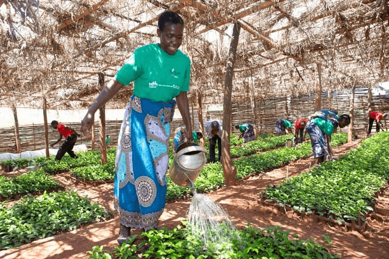
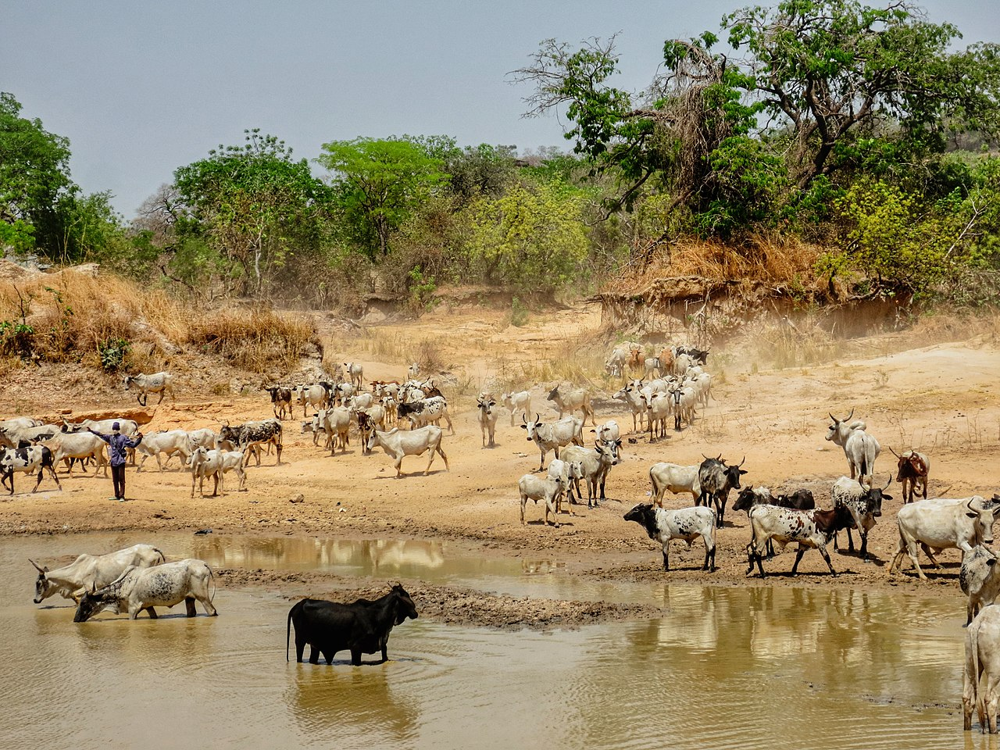

FOOD AND LIVESTOCK
 
The main food crops are corn, yams, cassava and other root crops. Despite government efforts to encourage farmers to switch to production of staples, total food production fell by an average of 2.7 percent per year between 1971–73 and 1981–83. By 1983 Ghana was self-sufficient in only one staple food crop—plantains. Food imports rose from 43,000 tons in 1973 to 152,000 tons in 1981.Those were various reasons for the declined performance, including growing urbanization and a shift in consumer preference from starchy home-grown staples to rice and corn. However, farmers also had to deal with shortages of production inputs, difficulties in transporting produce to market, and competition from imported foods that were underpriced because of the vastly overvalued Cedi. Weather also played a major part, particularly in 1983, when drought cut cereal production from 518,000 tons in 1982 to only 450,000 tons. Food imports in 1982–83 amounted to 115,000 tons, with the 1983–84 shortfall estimated at 370,000 tons.
Livestock herding Bovinae (cattle) in Ashanti. There was a spectacular improvement beginning in 1984, mainly because of recovery from the prior year's drought. By 1988 the agricultural sector had vastly expanded, with food crops responsible for the bulk of the increase. Drought conditions returned in 1990, bringing massive falls in the production of all food crops apart from rice, but better weather and improved production brought prices down in 1991.
In August 1990, the government moved to liberalize the agricultural sector, announcing the end of minimum crop prices. The measure's impact was difficult to gauge because higher production meant more food was available at better prices anyway. The government's medium-term plan, outlined in 1990, sought to raise average crop yields and to increase food security, with special attention to improved producer incentives and storage facilities.
Livestock production was limited by the incidence of tsetse fly in Ghana's forested regions and by low grazing vegetation elsewhere and it was of major importance only in the relatively arid north and was not earmarked for special treatment. In 1989 there were an estimated 1.2 million cattle, 2.2 million sheep, 2 million goats, 550,000 pigs and 8 million chickens in Ghana.
Cowpea (Vigna unguiculata) is a major crop here and so cowpea pests and diseases are a significant concern for the country. As of 2022 cowpea production has been declining for years and farming this crop has become increasingly unattractive due to pests and diseases. The pod borer Maruca vitrata is the most severe among those, with some farmers losing 90%. The government and various NGOs are promoting Bt cowpea as their pod borer-resistant variety of choice, and although it still needs regulatory approval as of 2022, farmers are eager for it and it is expected to be approved by 2024 or earlier. See also Genetically modified food in Ghana. The Ministry's IPM plan includes recommendations for this crop. page4